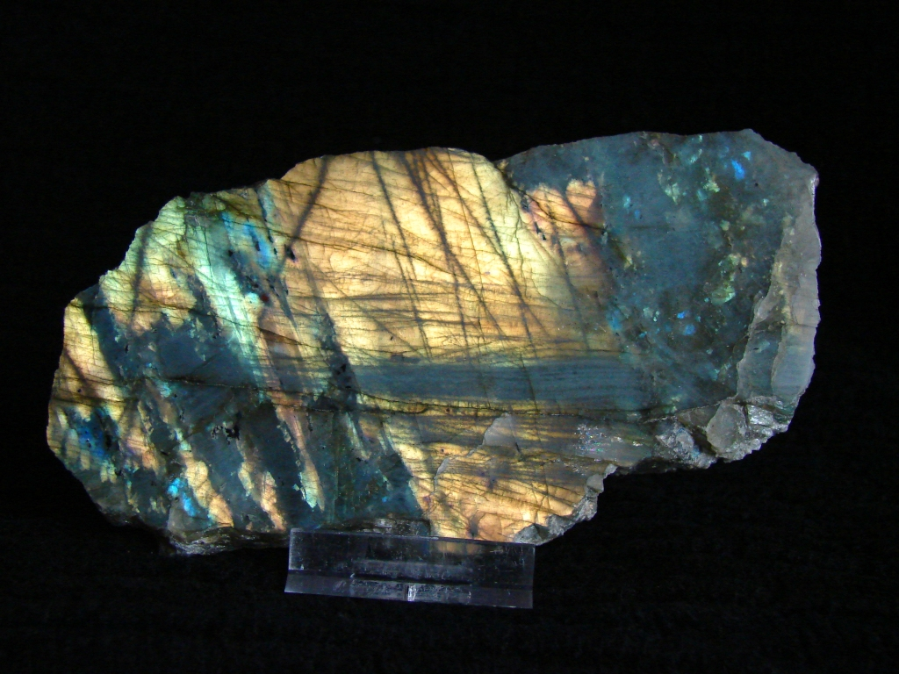
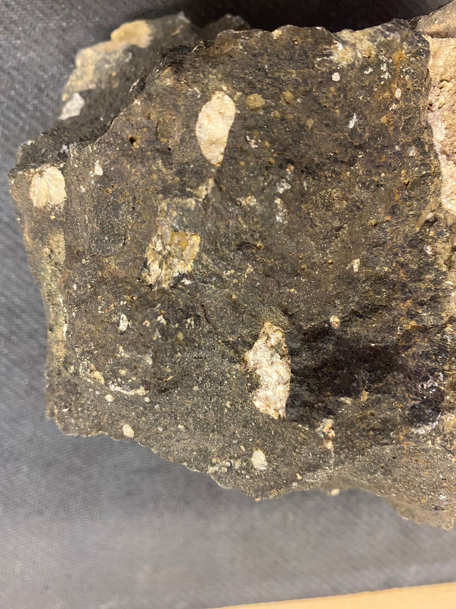

Labradoryt



Opis i historia
Labradoryt to skaleniowiec plagioklazowy znany przede wszystkim z niezwykłego zjawiska optycznego zwanego labradorescencją — mieniąca się gra kolorów (od niebieskiego, przez zieleń, złoto, aż po purpurę i różowy), która pojawia się gdy kamień jest obracany w świetle. Efekt ten powodowany jest interferencją światła na cienkich warstwach naprzemiennych skladu (lamellach), rozdzielonych podczas chłodzenia magmy.
Kamień znaleziony po raz pierwszy przez misjonarzy morawskich na Labradorze (Kanada) ok. 1770 roku. Legenda Inuitów Beothuk głosi, że Zorza Polarna (Aurora Borealis) była kiedyś uwięziona w skałach Labradoru — wojownik uwolnił ją uderzeniem włóczni, lecz część Zorzy pozostała zamknięta w labradorytach. Finowie znają wyjątkową odmianę — spektrolite z całego spektrum barw.
Gdzie występuje
- Kanada — Labrador (Nowa Fundlandia); pierwsze opisane złoże, piękne niebieskie i zielone okazy
- Madagaskar — największy producent biżuteryjnego labradorytu; intensywne wielobarwne okazy
- Finlandia — Ylämaa (Karelii); wyjątkowy spektrolite z pełnym spektrum barw, uważany za najpiękniejszy labradoryt na świecie
- Rosja — Ukraina (historycznie ZSRR); masowe złoża o mniejszej labradorescencji
- Meksyk — Chihuahua; tzw. „Golden Labradorite"
- Indie — okazy o wyraźnej labradorescencji niebieskozielonej
Właściwości lecznicze i metafizyczne
Labradoryt jest kamieniem magii, intuicji i ochrony. Jego migotliwa natura symbolizuje tajemnicę i zdolność do widzenia tego, co ukryte.
- Wzmacnianie intuicji i zdolności psychicznych: jeden z najsilniejszych kamieni do rozwijania jasnowidztwa, telepatii i przepowiadania
- Ochrona aury: tworzy silną tarczę wokół aury właściciela
- Transformacja: pomaga w procesach zmian — zarówno wewnętrznych jak i zewnętrznych — dodając odwagi do porzucenia tego, co nie służy
- Praca szamańska: popularny wśród szamanów i uzdrowicieli jako kamień do podróży między wymiarami i komunikacji z duchowymi przewodnikami
- Zdrowie: tradycyjnie związany z układem oddechowym, reumatyzmem i trawieniem
Właściwości ochronne
- Ochrona aury: labradoryt tworzy szczelną powłokę wokół pola energetycznego człowieka, zapobiegając wyciekom energii i odpierając negatywne wpływy
- Ochrona przed energetycznymi wampirami: chroni przed ludźmi i sytuacjami, które wyczerpują energię życiową
- Ochrona podczas podróży duchowych: niezastąpiony przy pracy medytacyjnej i szamańskiej — zapewnia bezpieczny powrót
- Odchylanie magii: w tradycjach słowiańskich i celtyckich labradoryt odchyla rzucone uroki i odwraca negatywne zaklęcia
Czakry
Pielęgnacja i ładowanie
- Czyszczenie: kadzidłem, dźwiękiem, selenitem — unikaj soli, która może uszkodzić powierzchnię
- Ładowanie: Zorza Polarna jest idealna (!) ale trudno dostępna — zastępczo pełnia księżyca lub krótka ekspozycja na wschód słońca
- Uwaga: unikaj ekspozycji na chemikalia i ultradźwięki — mogą uszkodzić delikatną strukturę lamellową odpowiedzialną za labradorescencję
Ciekawostki
- Labradorescencja nosi polską nazwę „iryzacja labradorytowa" i jest efektem czysto fizycznym, nie chemicznym — jej intensywność zależy dosłownie od kąta patrzenia
- Fiński spektrolite był przez lata objęty embargiem eksportowym — Finlandia chciała chronić swój unikalny zasób naturalny
- Kamień pojawia się w wyposażeniu wielu znanych osób — od gwiazd Hollywood po polityków — jako talizman chroniący przed wrogami
- W 2019 r. na Marsie odkryto skały zawierające labradoryt — pierwsze pozaziemskie znalezisko tego minerału